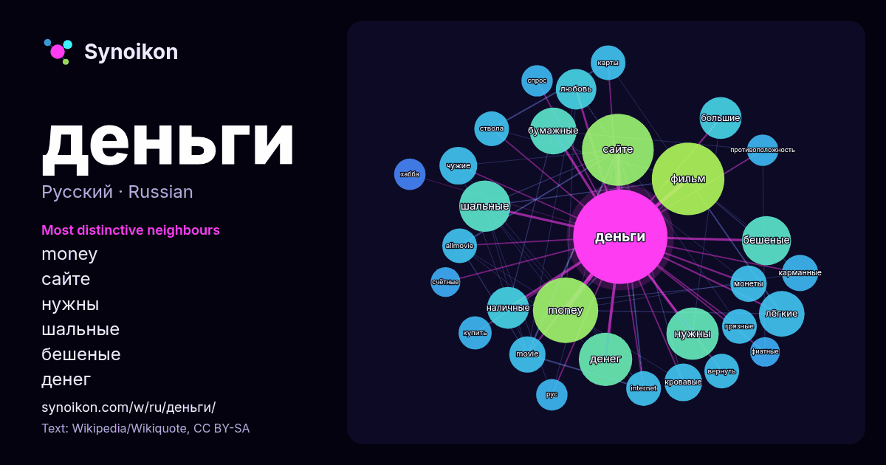

Русский · популярное слово
деньги
“money” · Слова вокруг него в 1167 вхождениях из Википедии, Wikiquote.

Самые характерные соседи
- money 39×
- сайте 37×
- нужны 25×
- шальные 25×
- бешеные 23×
- денег 21×
- бумажные 21×
- лёгкие 19×
- наличные 17×
- фильм 16×
- кровавые 14×
- чужие 14×
- карманные 13×
- movie 13×
- любовь 12×
- грязные 12×
- allmovie 12×
- большие 12×
- internet 12×
- ствола 11×
× = во сколько раз чаще, чем в обычном тексте Википедии.
Самые частые соседи
- фильм 48
- сайте 47
- money 39
- денег 26
- нужны 25
- шальные 24
- бешеные 22
- бумажные 20
- лёгкие 19
- большие 16
- наличные 16
- любовь 15
- кровавые 13
- чужие 13
- movie 12
- карманные 12
- монеты 12
- allmovie 11
- internet 11
- вернуть 11
В контексте
- потребления как физический товар — бумажные деньги, чеки или долговые расписки, в том числе в электронной форме. Такие деньги получают свою ценность, будучи объявленными Wikipedia snippets · Деньги
- «Грязные деньги» (англ. In the Grey, дословно — «В серой зоне») — американский художественный фильм режиссёра Гая Ричи с Розамунд Пайк, Джейком Джилленхолом Wikipedia snippets · Грязные деньги
- «Деньги, деньги, ещё деньги» (англ. Mo' Money) — кинофильм. Джонни Стюарт (Дэймон Уэйанс) — мелкий жулик, занимающийся мошенничеством совместно с братом Wikipedia snippets · Деньги, деньги, ещё деньги
- «копейка», а за 1⁄200 — «денга» (с XVIII века — «деньга»). Отсюда же происходит современный термин «деньги». Деньга начала чеканиться как серебряная монета в Wikipedia snippets · Деньга
- «Альфа Деньги» (ранее «А Деньги») — микрофинансовая компания, которая занимается выдачей различных видов займов. Является дочерней компанией Альфа-Банка Wikipedia snippets · Альфа Деньги
- «За деньги да» (рус.). tntmusic.ru. Дата обращения: 21 апреля 2023. Архивировано 21 апреля 2023 года. Рецензия на клип: Инстасамка – «За деньги да». Wikipedia snippets · За деньги да
- «Вердикт за деньги» (англ. Runaway Jury) — американская драма/триллер 2003 года Гэри Фледера. Является адаптацией книги Джона Гришэма «Вердикт», но имеет Wikipedia snippets · Вердикт за деньги
- Де́ньги: Деньги — универсальный эквивалент стоимости товаров и услуг: Деньги — множественное число слова «деньга», названия древнерусской серебряной монеты Wikipedia snippets · Деньги (значения)
Другие слова
- бог
- власть
- вода
- жизнь
- здоровье
- золото
- искусство
- истина
- история
- климат
- кошка
- мост
- наука
- пища
- поезд
- природа
- работа
- семья
- сердце
- смерть
- собака
- язык
Предварительно рассчитано 2026-10-09 с настройками по умолчанию (±5 слов, средний корпус). Интерактивная карта может обновить данные в реальном времени.
Интерфейс переведён машинно; исправления приветствуются.